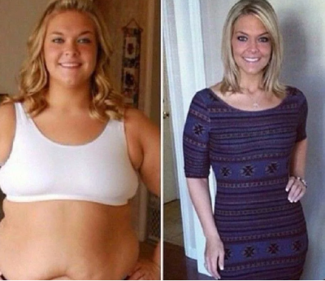

Adele, e cila është dobësuar më 45 kg, ndau fotografinë e saj të re, dhe tregoi sekretin e transformimit të saj


5 maj këngëtare e famshëm dhe fituesja e 15 çmimeve Grammy, Oscar dhe Golden Globe, Adele festoi ditëlindjen e 32-të. Kohët e fundit, këngëtarja ishte në hije dhe nuk e ka bërë postimet të reja shumë shpesh në llogarinë e saj në Instagram. Sidoqoftë, ajo së fundmi është drejtuar në rrjetet sociale për të falënderuar njerëzit që i shkruanin urimet e ngrohta për ditëlindjen e saj së bashku me një foto që e la fansat e saj pa fjalë.
Ja si dukej Adele në vitin 2013, gjatë Ceremonisë se Oscar-it të 85.

Dhe ne atë kohë këngëtarja gjithashtu dukej shumë e bukur. Të gjithë u mësuan me imazhin e saj, por, siç e pohoi vetë, ajo ndihesh shumë e parehatshëm më një peshë të tillë. Në fillim të karrierës së saj, interpretuesja peshonte 132 kg, por me kalimin e kohës ajo arriti të humbte pak peshë, por nuk mund të shpëtonte plotësisht nga pesha e tepërt.
Dhe kështu, në vitin 2019, pasi u divorcua nga Simon Koneki, Adele filloi të bie në peshë dhe fansat e saj e vunë re këtë gjë.
Deri më sot, këngëtarja është transformuar plotësisht dhe ka treguar se si duket tani, duke postuar një foto të re për ditëlindjen të saj e 32-të.
Ja se si duket Adele tani:

Ajo jo vetëm që është bërë shumë elegante, por duket edhe të paktën 10 vjet më e re! Fansat vunë re transformimin e saj të mahnitshëm dhe filluan të interesohen për këngëtaren se si e arriti atë rezultat në një kohë kaq të shkurtër!
Adele nuk i injoroi pyetjet e fansave të saj dhe u përgjigj atyre në postimin tjetër. Ja çfarë ajo shkroi:
«Unë kurrë nuk kam pasur komplekse për të qenë mbipeshë . Por fillova të vërej se gjendja ime shëndetësore u përkeqësua, u shfaq gulçim dhe kuptova se duhet të ndryshoja diçka ... Dua të jem e shëndetshëm për djalin tim.
Fillova me trajnime intensive në palestër, ndryshova dietën time, hoqa dorë nga zakonet e këqija, kjo dha një efekt të vogël, por jo atë që e prisja dhe aq më tepër nuk po arrija rezultatin që doja. "
Në të njëjtën kohë, Adele zbuloi pikat Slimagic, për të cilat ne kemi treguar më detaje. SLIMAGIC - një koncentrat natyral për djegien e yndyrës viscerale (të thellë) dhe nënlëkurore, ka një efekt kompleks në trup, duke ushqyer atë me vitamina dhe minerale. Koncentrati bimor ngop trupin me vitaminat A, E, vitaminat të grupit B, stimulon djegien aktive të dhjamit pa shkaktuar dëm për shëndetin. Zhduk formacionet e celulitit në kofshët, barku dhe krahët që në javën e 2-të të përdorimit. Duke marr këto pikat nuk ka pse të vdisni nga uria, madje mund të pini verë të kuqe dhe të hani çokollatë të zezë, sepse ato ndikojnë pozitivisht në gjendjen e sistemit nervor.

Vitin e kaluar, këngëtarja që mori Grammy zgjodhi rrugëtimi për të humbur peshë me Slimagic, dhe rezultatet që ajo arriti e lanë fansat e saj pa fjalë. Këngëtarja arriti të humbiste 45 kg vetëm për dy muaj dhe tani ajo duket fantastike!
Ja çfarë shkruante ajo në rrjetet e saj sociale:
“ Gjëja më e rëndësishme në humbjen e peshës është mos të dëmtoni organizëm. Për fat të keq, metodat më të njohura të humbjes së peshës nuk mund të mburren me këtë. Ju nuk mund të qëndroni më një dietë gjatë gjithë kohës, dhe jo të gjithë njerëz mund ta përballojnë një dietë të tillë. Duke mos arritur qëllimin e tyre, njerëzit i drejtohen ilaçeve, shumica e të cilave dëmtojnë trupin, duke shkaktuar keqfunksionime në organizëm. Humbja e peshës duhet të jetë e natyrshme dhe të mos shqetësojë proceset e brendshme në trup. Deri më tani, Slimagic është i vetmi ilaç që i kalon këto sfida. Mikroelementet aktive të ilaçit provokojnë një përshpejtim të metabolizmit dhe djegien e masës së yndyrës të paktën 10 herë më shpejtë. Jam i bindur që ky ilaç është më i miri që ekziston sot në dietologji moderne. Provova vetë dhe arrita rezultate të mahnitshme pa dëmtuar organizmin tim. Unë mendoj se 45 kg në dy muaj është një sukses i vërtet!”
" Unë pija Slimagic në mëngjes me një gotë ujë . Dhe pas një jave u befasova nga rezultatet. Isha plot energji, dhe në të njëjtën kohë nuk isha i uritur dhe nuk e lodhja veten me stërvitje. Një javë më vonë u peshova dhe e pashë që kisha humbur 4 kg. Vazhdova të pija pika në mëngjes bashkë me aktivitetet e mia të përditshme dhe pesha u largua vetë. Në javën e katërt, kur u peshova, isha e befasuar, pesha ime zbriti më 14 kg. . Pas dy muajsh peshoj 45 kilogramë më pak! Unë jam shumë i kënaqur që mund të ndaj arritjet e mia me ju, dhe madje edhe më të lumtur që mund t'ju them se si e arrita këtë. Jini të shëndetshëm, kujdesuni për veten tuaj dhe kujdesuni për shëndetin tuaj! " shkruante Adele në postimin të saj.
Slimagic është certifikuar në Greqi, dhe derisa të shfaqet në farmacitë, mënyra më e besueshme për të blerë këtë produkt është ta porosisni në faqen zyrtare të furnizuesit. Kjo garanton cilësinë të produktit dhe ju mbron nga mashtrimet.
Për të plotësuar një kërkesë, mjafton të shkruani emër, mbiemër dhe numri i telefonit për komunikim në faqen zyrtare të produktit SLIMAGIC dhe të prisni telefonatën nga menaxheri për të konfirmuar porosinë.


Komentet
Uaaa, i lumtë asaj, ka ndryshuar jashtë mase!!! Unë atë e dua shumë)
PërgjigjuUnë arrita te humbas 31 kg. Pesha ime ishte 94 kg. Mbaj mend se sa e vështirë ishte në fillim, isha në merak do të funksionojë ose jo, dhe a ishte efektive ose jo. Është e vështirë kur asnjë nuk të mbështet, veçanërisht kur pesha është e madhe, por "SLIMAGIC" i dogji të gjitha kilogramët, nuk e prisja rezultate të tilla!
PërgjigjuUnë kam dëgjuar tashmë për këto pika dhe madje kam porositur, kam vetëm një javë, por nuk e besoj, por në 7 ditët e para kam rënë 3 kg dhe kanë mbetur vetëm 18! Do të kem sukses! Patjetër:)
PërgjigjuPo që Adele pati sukses duhet të provojmë dhe ne!
PërgjigjuJam e shokuar fare!!! Nuk po e njoh atë, a mund të ndodhë kështu ne të vërtetë!
PërgjigjuAjo po gënjen, ajo ndoshta ka bërë operacionin. Nuk ndihmojnë këto pikat, provova vetë. Mashtrim dhe gënjeshtra.
PërgjigjuPërshëndetje, Blerta dhe faleminderit për mesazhin. Kjo është një deklaratë shumë e çuditshme, pasi produkti ynë ka të gjitha diploma dhe certifikatat, ai ka kaluar teste reale. Pas konsultimit me specialistët tanë, ju rekomandojmë të kontrolloni dietën tuaj të përditshme. Ndoshta kur e merrni atë, ju pa dashi hani TEPËR? Atëherë mungesa e efektit është e kuptueshme - ilaçi ndihmon, por ju nuk e shihni këtë në pasqyrë? Faleminderit përsëri për përgjigjen. Ditën e mirë.
Përgjigjukontrollova vetën. Me të vërtetë fillova të haja më shumë ((
PërgjigjuAtëherë ju sugjerojmë që të bëni përsëri blerjen e ilaçit, por një kurs të plotë.
Përgjigjubëra kështu - faleminderit, më ndihmoi!!!)
 PërgjigjuEdhe unë arrita të humb peshë! Uroj të gjithëve fat të mirë, unë mbështes mendërisht të gjithë ata që janë duke luftuar me peshën të tepërt!
PërgjigjuKy ilaç me të vërtetë më ndihmoi mua si Adelen. Një ndryshim i madh midis atë që ishte dhe atë që është tani. Asnjëherë nuk kam pritur që mund të humbja pothuajse 40 kg në moshën time (deri më tani -37 kg). Ndihem super! Një zgjidhje e tillë për njerëzit si unë është thjesht e përsosur! Unë rekomandoj SLIMAGIC me siguri! Këto janë rezultatet e mia:
Para se të filloja të merrte pikat SLIMAGIC, peshoja 90 kg. Në rininë time isha gjithnjë i hollë, dhe me moshën u shfaqen barku dhe anët me dhjam. Në moshën 35 vjeçe kuptova se duhej ta mbaja veten. Ia kushtova stërvitjes në palestër gati një vit, por nuk arrita të kthehesha në formën time normale. Pastaj shtova në racion tim "SLIMAGIC" dhe brenda vetëm disa javësh u shndërrova në atë person nga rinia. Tani kujdesem për trupin tim, dhe gjithmonë kam në dispozicion disa pako "SLIMAGIC"
PërgjigjuPas lindjes, nëse shtuat peshë, duhet që urgjentisht t`i hiqni atë duke bëre ecje për disa orë, por kam dëgjuar që është shumë e dëmshme për nyjat, sepse është si të jesh duke kërcyer mbipeshë, nyjat thjesht nuk mund ta durojnë atë. Të përdoresh "SLIMAGIC" si unë, është shumë i përshtatshëm për tu rikuperuar. Është e çuditshme që jo të gjithë e dinë për këtë ilaç.
PërgjigjuUnë gjithashtu i përdora këto pika. Më vetëm 1 kurs të plotë të "SLIMAGIC" humba gati 30 kg, pësova ndryshime të mëdha, shumë të mëdha. Epo, sigurisht që unë nuk po konsumoj ëmbëlsira, por nuk e kufizoj veten për gjërat të tjera. Dua patate - ha patate.
, faqja zyrtare e prodhuesit është i vetmi vend ku mund të merrni "SLIMAGIC" në vendin tonë, apo mund të gjejmë në dyqane të tjera online?
PërgjigjuVasilika, për fat të keq jo, pasi farmacitë po përpiqen të përfitojnë para nga njerëzit, por ne po përpiqemi t'i ndihmojmë ata për problemet e tyre shëndetësore. Farmacitë nuk pranuan të vendosnin çmimin e prodhuesit, kështu që ne jemi detyruar të shesim në internet pasi këtu mund të vendosim çmimin që është i përshtatshëm për ju.
PërgjigjuSuper nëse me të vërtetë funksionon. Megjithëse jam shumë skeptike. Unë mund të besoj në fuqinë e një kokteji më shumë se të pikave. Çfarë nuk do të bësh për hir të figurës, unë do ta porosis.
PërgjigjuUnë kam pirë "SLIMAGIC" për një kohë të gjatë. Kisha gjithashtu probleme me peshën, por tani as nuk mendoj për këtë, ha gjithçka me radhë, dhe nëse shëndoshem, pi kursin dhe përsëri jam normale.
PërgjigjuJAM 97 KG. NUK E DI SI TE HEQ ME NDIHMONI. NUK DUA TE KALOJ 100. ÇFARË DUHET TE BEJ???A???????? NDIHME!!!!!!! A MUND TE GJEJ SLIMAGIKE TE FARMACIA??????
PërgjigjuTajna, atëherë, sigurisht që mund të kërkoni, por unë e gjeta atë vetëm në faqen zyrtare të prodhuesit, dhe kështu është më e besueshme dhe mund ta kapni ndonjë ofertë.
PërgjigjuMirëdita Tajna. Për momentin, "SLIMAGIC" mund të blihet vetëm në faqen tonë zyrtare.
Përgjigju